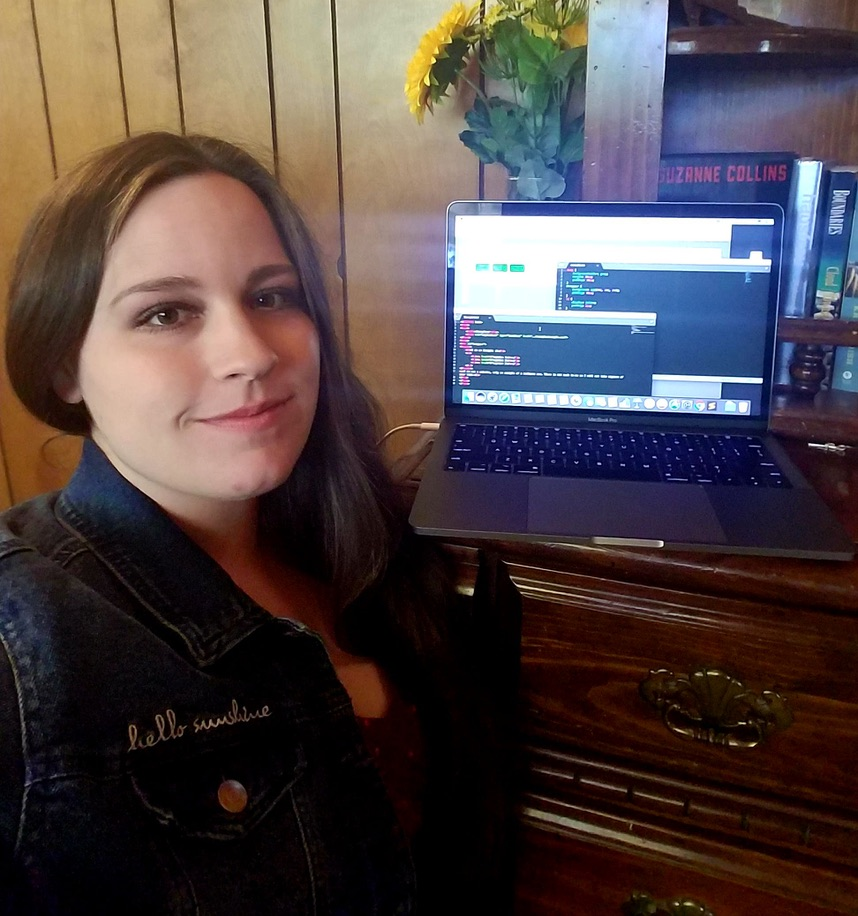

Marian Tow
About

Hello world! This is a paragraph about me. My name is Marian Tow, I am 34 years old, mom of two little girls and employeed as a Sound and Comm installer with Crosstown Electrical and Data. I have a little experience in coding and am hoping to revamp my skills and learn to pursue a career in this industry. I have a good job at the moment, but it is difficult to be a mom and do what I do. Praying for a miracle.
Skills
Projects
Experience
-
The Last Mile
I learned to do some coding thru this program for 6 months. These included HTML, CSS and some Javascript.
-
Sound and Communications Installer
Telecommunucations, Fiber, Networking
-
Cisco Network Associate
I have completed the courses to gain my certification for CCNA. I have a knowledge of the 7 layaer to OSI model for network data transfer.
-
C-Tech
Trade School where I learned about the Telecommunucations industry and learned skills to become a Sound and Communications Installer.